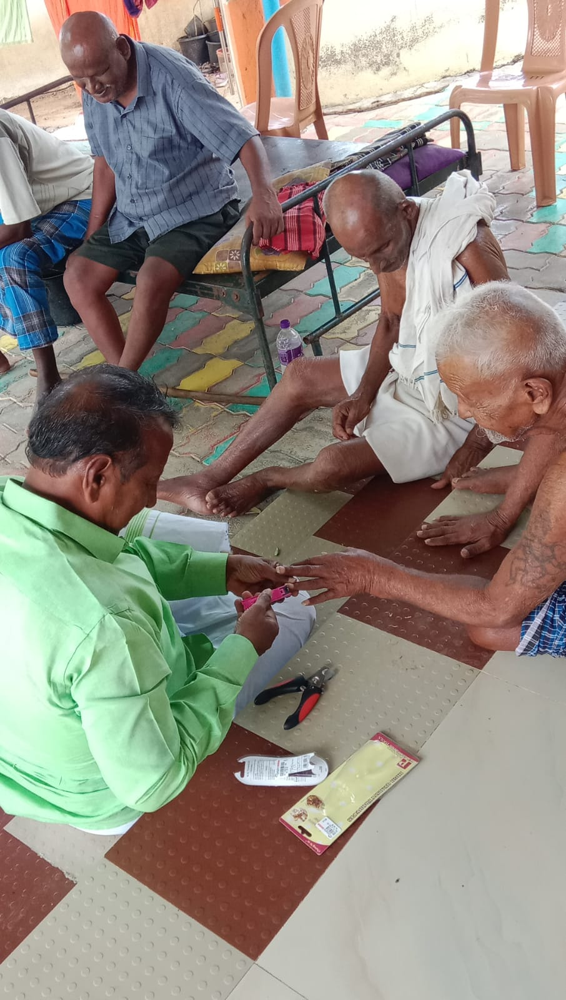

Contact & Visit
Come visit Anbalayam.
We welcome well-wishers and supporters who would like to know more about Anbalayam.

Address
10/154 A, Punniam Vayal,
Kulathukudiyiruppu Road,
Avudayarkoil (Post),
Pudukkottai District,
Tamil Nadu, India.
Founded & run by
Mr. Maram Raja